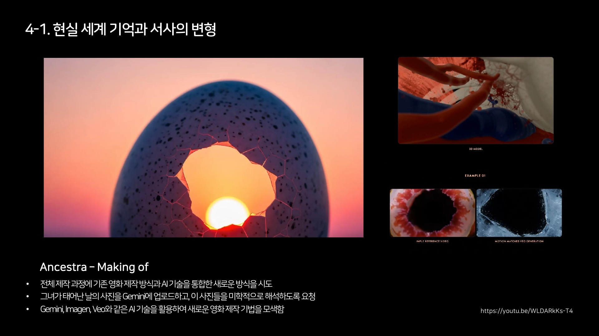
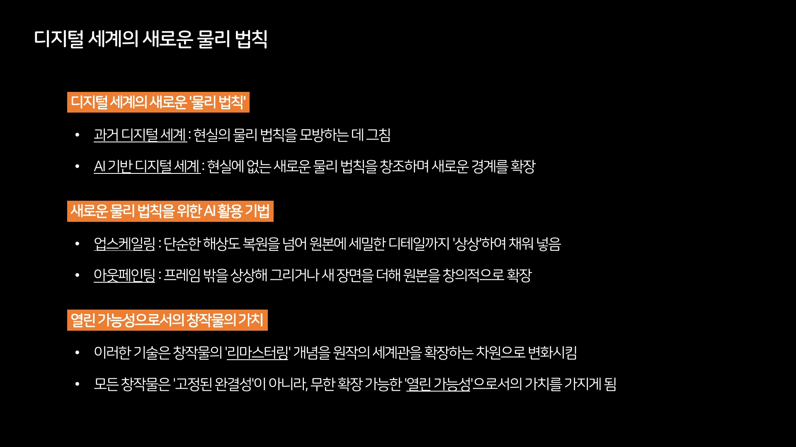
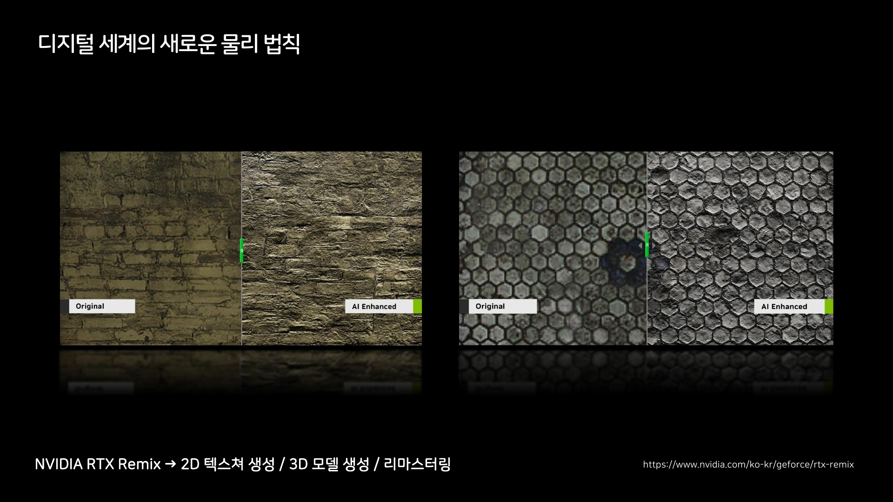
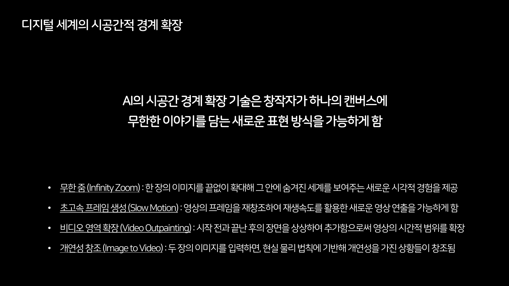
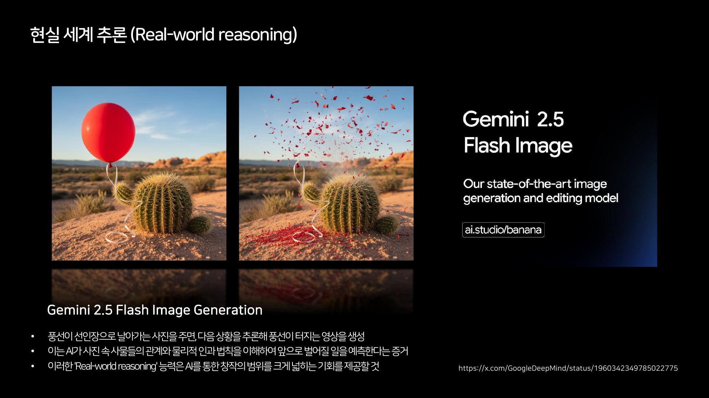
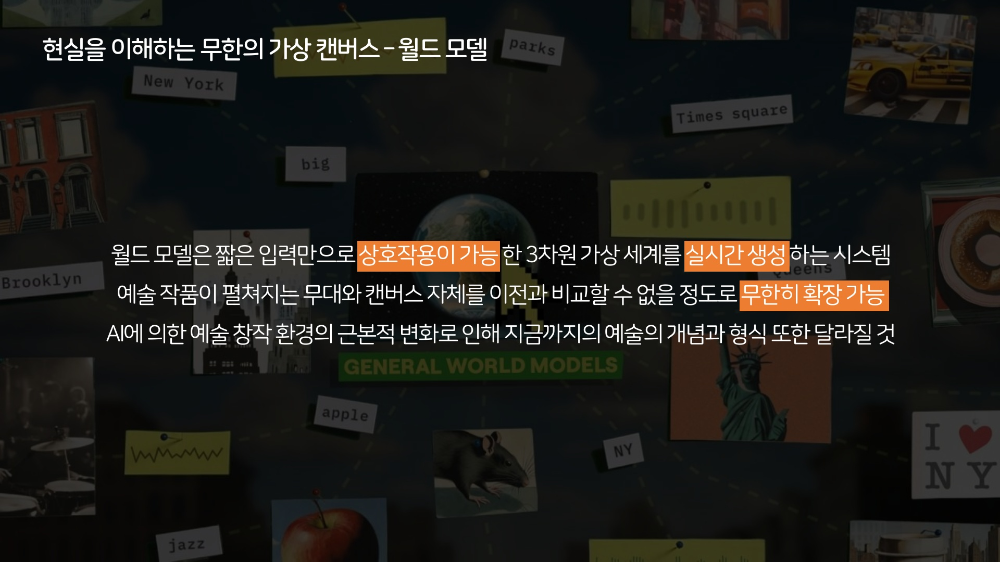
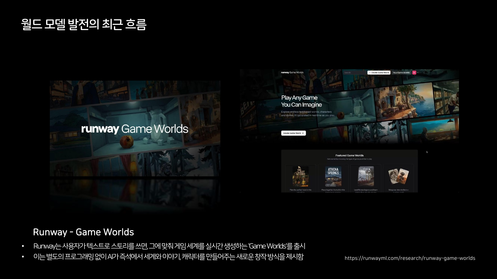
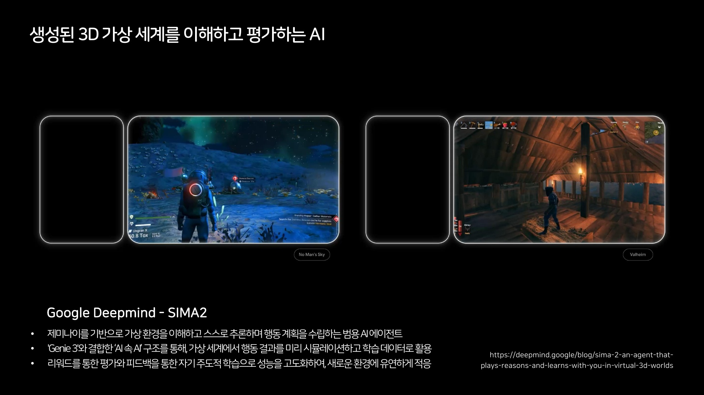
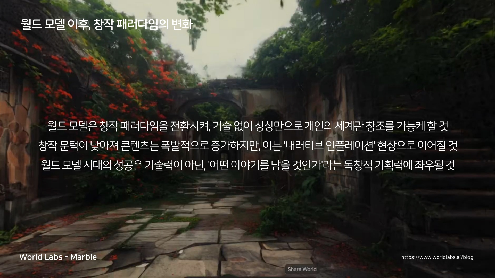
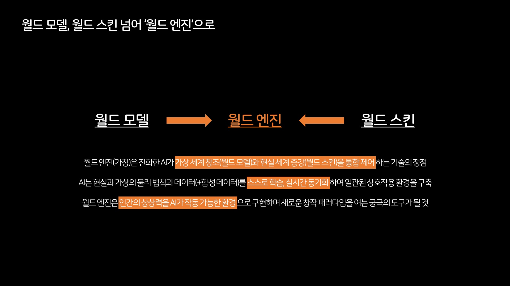

AI 시대, 창작의 정의를 다시 묻다 (3) 현실과 가상의 경계면에서
가상현실이라는 말에는 순서가 들어 있다. 현실이 먼저 있고, 가상은 그 위에 얹힌다는 순서다. 발표의 마지막 장을 준비하면서 그 순서가 잘 맞지 않는다고 느꼈다. 기억이 생성되고, 픽셀이 현실의 인과를 추론하고, 세계가 실시간으로 만들어져 일상 위에 덧입혀지고 있었다. 창작자가 서게 되는 자리도 현실 쪽도 가상 쪽도 아닌, 그 사이의 얇은 면으로 옮겨가고 있는 것 같다.
시리즈 안내 : 2025년 11월, 한 기업 워크숍에서 했던 발표 "AIGC 시장 트렌드 및 창작자 패러다임의 변화"를 다시 정리하는 세 편의 노트 중 마지막이다. 1편은 실력과 노력의 가치, 2편은 프롬프트에서 워크플로우로 넘어가는 창작 방식의 변화를 다뤘다. 이번 편은 발표의 마지막 장, 그리고 현장의 질문들이다.
작년에 본 것 중에 오래 남은 영상이 하나 있다. 일본의 한 창작자가 자기 어렸을 때 사진으로 영상을 만들었다. 계속 보다 보니 이상한 점이 있었다. 그 시대에는 그 장면을 찍을 수 있는 도구가 없었다. 그러니까 그 장면은 세상에 존재하지 않았던 장면이다.
발표에서 나는 이 이야기를 이렇게 이어갔다. 인간의 기억력은 계속 감쇄된다. 어렸을 때 익숙했던 내 모습이 낯설어 보일 때가 있고, 부모님의 젊은 시절 목소리는 기억나지 않는다. 그런데 AI로 만든 콘텐츠를 사진첩처럼 계속 보다 보면, 그쪽이 더 또렷한 기억이 되어 실제 기억을 덮어써 버린다. 실제로 존재했던 것들이 새롭게 생성된 것들에 덮이고, 우리는 AI가 만든 세상을 현실로 인식하게 된다. 이런 일은 점점 많아질 것이다.

장표에는 이렇게 적어뒀다. 기억의 트리거로서 기록이 생성되면, 기존의 모호했던 기억은 쉽게 덮어 쓰여진다. 사진이 기억을 붙잡아두는 장치였다면 생성된 이미지는 기억을 다시 쓰는 장치에 가까운데, 곤란한 것은 나중에 만들어진 쪽이 더 선명하다는 점인 것 같다. 우리는 선명한 쪽을 기억이라고 부르는 습관이 있다.
기술 이야기를 하다가 갑자기 기억 이야기냐고 할 수 있는데, 나는 이 대목이 발표 마지막 장의 입구로 가장 정확하다고 생각했다. 디지털 세계가 다시 쓰이고 있다는 것을 가장 개인적인 층위에서 보여주기 때문이다.
01기억과 서사가 다시 만들어진다
비슷한 모티브의 작업들이 있다. Matthew Niederhauser와 Marc Da Costa가 2023년에 낸 VR 작품 툴파맨서(Tulpamancer)는 헤드셋을 쓰고 상황을 입력하면 그 장면을 360도 가상 공간으로 만들어준다. 남들은 내가 뭘 보고 있는지 모르고, 보는 순간 그 장면은 영원히 사라진다. 꿈을 아무리 설명하려 해도 설명이 안 되는 그 경험을, 오히려 생성 AI가 "어, 이거 진짜 꿈 같아"라는 감각으로 제공해준 사례다.
이 작품에서 내가 오래 붙잡은 건 사라진다는 조건이었다. 보통 기술은 남기는 쪽으로 발전한다. 더 오래, 더 선명하게, 더 여러 사람이 볼 수 있게. 그런데 이 작품은 반대로 갔다. 단 한 사람에게, 단 한 번만 보여주고 지운다. 그래서 그 장면은 기록이 아니라 기억이 된다. 남길 수 있는 기술을 가진 채로 남기지 않기를 선택하는 것도 창작의 재료가 될 수 있다고 생각했다.
장편 영화도 있다. Eliza McNitt 감독의 Ancestra인데, 감독이 자신의 출생을 다뤘다. 아빠가 출생 시점에 찍어둔 단 한 장의 사진에서 키 비주얼을 만들어냈다. 그 연결고리 덕분에 이후 생성된 모든 영상이 현실에 기반한 영화라는 하나의 내러티브를 가져갈 수 있게 된다. 유튜브에 전체가 공개돼 있어서 직접 다 볼 수 있다.
흥미로운 것은 제작 방식이다. AI로만 만든 것이 아니라 전통적인 제작 파이프라인을 혼합했다. 촬영한 영상을 AI에게 주고, AI가 만든 것을 다시 받아서, 서로 핑퐁을 하며 결과물을 만들었다. 아이가 태어나는 중요한 장면은 촬영으로 만들고, AI에게 "아이를 넣어줘"라고 했다. 아역배우는 없었다.

이 방식이 중요하다고 본 이유가 있다. 생성 모델은 아직 긴 호흡의 일관성을 혼자 감당하지 못한다. 그런데 촬영본을 중간중간 앵커로 박아두면, 그 사이를 생성이 메우는 동안에도 전체가 한 작품에서 벗어나지 않는다. 실사와 생성을 섞는 게 과도기의 타협처럼 보일 수 있지만, 내가 보기에는 오히려 지금 가장 실용적인 구조다. 전부 AI로 만들 수 있느냐보다, 어디에 사람이 찍은 프레임을 박아둘 것이냐가 실제 작업에서는 더 자주 묻게 되는 질문이었다.
기록이 기억을 만드는 시대에서, 생성이 기억을 만드는 시대로 넘어가는 장면들이라고 생각한다. 창작자에게 이것은 소재의 확장이 아니라 책임의 확장에 가깝다. 우리가 만드는 것이 누군가의 기억이 될 수 있기 때문이다.
02디지털의 물리 법칙이 다시 정의된다
디지털이 등장한 지 오래되다 보니 우리에게는 디지털에 대한 고정관념이 있다. 이미지를 키우면 깨진다. 픽셀은 열화된다. 프레임은 정해져 있다. 그런데 생성 시대로 오면서, 우리가 알고 있던 디지털의 물리 법칙이 새로 정의되기 시작했다.
업스케일링을 하는데 깨지지 않는다. 픽셀 사이에 없던 것들을 생성해서 채우기 때문이다. 창의력 파라미터를 높이면 단순히 메꾸는 게 아니라 창의력을 더해서 메꿔버린다. 아예 새로운 것이 나오는데 "어, 난 이게 더 마음에 들어" 같은 일이 벌어진다. 오래된 게임은 회사가 리마스터링해서 재출시하는 게 아니라, 그래픽 엔진이 실시간으로 화면 속 이미지를 다시 그려준다. 30프레임짜리 게임이 120프레임이 된다. 과거에 존재했던 디지털 콘텐츠 전체가, 별도의 노력과 시간 없이 다 리마스터링될 수 있는 시대로 가고 있는 것이다.

발표에서는 엔비디아의 RTX 리믹스(RTX Remix)를 예로 들었다. 오래된 게임의 2D 텍스처를 다시 생성하고, 3D 모델을 새로 만들고, 그것을 원본 게임 위에 얹는다. 원작자가 다시 만드는 게 아니라 플레이하는 쪽에서 다시 만들어진다는 점이 이전의 리마스터링과 다른 지점인 것 같다. 과거의 콘텐츠가 과거에 머무르지 않게 됐다.

영화 제작자들에게는 큰 기회가 열렸다. 예전에는 아이맥스 상영을 하려면 만들 때부터 그에 맞는 장비와 포맷과 비용이 필요했다. 이제는 작게 만들어서 크게 키운다가 가능해졌다. 슬로 모션을 만들면 비는 프레임을 AI가 채운다. 전혀 상관없는 두 개의 이미지를 주고 연결해달라고 하면, 자세히 설명하지 않아도 그 사이의 개연성을 만들어버린다. Veed의 AI 트랜지션 같은 기능이 그렇다. 두 장을 넣으면 현실의 물리 법칙에 기반해 그럴듯한 상황을 지어내 사이를 잇는다. 무한 줌이 가능하고, 화면 바깥의 없던 영역을 생성할 수 있다. 발표 장표에는 이것을 디지털 세계의 시공간적 경계 확장이라고 적었다.

물론 한계도 분명하다. 발표에서 나는 이 대목을 연극에 빗대 설명했다. 연극은 세트를 하나 세우면 그 세트 위에서 어느 정도 러닝타임을 끌고 가야 한다. 지금의 생성 영상은 그 러닝타임이 아직 짧다. 몇 초짜리 장면은 잘 만들지만, 같은 세트 위에서 몇 분을 버티게 하는 일은 다른 문제다. 그래서 실제로 작업할 때는 긴 장면을 한 번에 뽑으려 하지 않고, 짧은 장면을 여러 개 만들어 이어 붙이는 쪽으로 손이 가게 된다. 경계가 넓어졌다는 말과 아무 데나 갈 수 있다는 말은 아직 층이 다른 이야기다.
발표에서 나는 저작권 문제가 없는 과거의 에셋들이 재생산되는 사례로 4분짜리 영상을 하나 보여줬다. 고흐와 모나리자가 센트럴파크에서 만나고, 진주 귀걸이를 한 소녀와 셀카를 찍고, 뒤로 갈수록 등장인물이 동창회처럼 다 모인다. 우스운 영상인데, 보고 나면 우습지만은 않다. 픽셀은 더 이상 고정된 재료가 아니다.
03세계를 추론하는 모델
여기서 한 단계 더 들어간다. 이미지에서 풍선을 선인장 가까이 옮겨달라고 하면, 예전의 편집이라면 픽셀이 이동하고 끝났을 것이다. 지금의 모델은 풍선을 터뜨려 버린다. 그 일이 실제로 벌어질 수밖에 없는 상황이기 때문이다. 최근의 이미지, 영상 모델들은 세상의 법칙을 이해하고 있다. 그래서 이제는 반대로 "풍선은 터지지 않는다"를 프롬프트에 써줘야 한다.

발표 장표에는 이것을 현실 세계 추론(real-world reasoning), 그러니까 모델이 현실의 인과를 짐작해서 결과를 만들어내는 성질이라고 적어뒀다. 편집의 시대에는 내가 지시한 것만 일어났다. 추론의 시대에는 내가 지시하지 않은 것도 일어난다. 그래서 프롬프트를 쓰는 일이 지시에서 예외 처리 쪽으로 조금씩 옮겨가고 있는 것 같다.

이런 것들이 월드 모델(world model)이라는 개념으로 등장해서 발전하고 있다. 런웨이의 게임 월드(Game Worlds)는 텍스트로 스토리를 쓰면 게임 세계를 실시간으로 생성해준다. 별도의 프로그래밍 없이 세계와 이야기와 캐릭터가 그 자리에서 만들어진다.

거의 게임 엔진처럼 작동하는 생성 모델, 구글 딥마인드의 Genie 3도 나왔다. 코딩이나 모델링 없이 물리 현상을 표현하고, 과거의 상호작용을 기억해 세계의 일관성을 유지하면서 실시간으로 영상을 만들어낸다. 키보드와 마우스로 1인칭 시점을 실시간으로 움직인다. 마우스를 돌리면 오른쪽이 보이고, 내가 어떤 환경을 원하는지, 어떤 객체를 등장시키고 싶은지를 음성이나 키보드로 입력하면 그 안에서 새로운 일이 벌어진다. 프롬프터블 이벤트(promptable events), 그러니까 문장을 넣어 사건을 일으키는 방식이다.

내가 특히 중요하게 본 것은 메모리다. 게임 세계라면 이쪽에서 벌어진 일이 저쪽에 갔다 와도 남아 있어야 한다. 데모에서 왼쪽으로 돌아갔을 때, 앞서 내가 칠해놓은 것이 남아 있었다. 이것을 소셜 경험으로 만들면, 하나의 가상세계에 누군가 낙서를 하고 험담을 쓰고, 그것이 함께 쓰는 세계의 흔적으로 남는 일이 가능해진다. 세계가 기억을 갖는 순간, 그 세계는 배경이 아니라 장소가 되는 것 같다.
월드 모델을 만드는 곳은 계속 늘고 있다. 발표 시점에도 중국의 여러 회사들이 비슷한 것을 내놓고 있었다. 이미지 한 장을 넣으면 3차원 공간을 만들어 무한히 탐험하게 해주는 월드랩스의 마블(Marble) 같은 툴은 지금 바로 써볼 수 있다. 퀄리티가 아주 높지는 않지만, 그 공간을 게임 엔진으로 가져가 편집하고 통합할 수 있다.

거기서 한 걸음 더 간 것이 그런 세계 안에 AI 에이전트를 넣는 일이다. 구글 딥마인드의 SIMA 2는 제미나이를 기반으로 가상 환경을 이해하고 스스로 추론해서 행동 계획을 세운다. 이것을 Genie 3와 붙이면 AI가 만든 세계 안에서 AI가 움직이는 구조가 된다. 장표에는 AI 속 AI라고 적어뒀다. 흥미로운 건 그 목적이다. 가상 세계에서 행동의 결과를 미리 시뮬레이션해보고, 그것을 다시 학습 데이터로 쓴다. 세계를 만드는 일이 콘텐츠를 만드는 일이면서 동시에 학습 환경을 만드는 일이 되는 셈이다.

정리하면 이렇게 된다. 모델이 세계를 추론하고, 세계를 생성하고, 그 세계가 기억을 갖고, 그 안에서 사람과 에이전트가 함께 움직인다. 창작자가 만드는 것이 장면에서 세계로 넓어지는 것이다.
발표에서는 그다음에 올 것을 이렇게 적어뒀다. 기술 없이 상상만으로 각자의 세계를 만들 수 있게 되면 콘텐츠는 폭발적으로 늘어난다. 나는 그 상태를 내러티브 인플레이션이라고 불렀다. 만들 수 있는 세계가 흔해지면 세계 하나하나의 무게는 가벼워질 것이다. 그래서 월드 모델 시대의 승부는 기술력보다 어떤 이야기를 담을 것인가 쪽에서 갈릴 것 같다.

04현실 위에 입혀지는 세계
마지막 단계는 현실 쪽이다. 스마트 글래스가 발전하면 우리는 카메라와 센서를 통해 세상을 보면서 다니게 된다. 매일 출근하는 길이 좀 밋밋하다고 느껴질 때, "불구덩이로 좀 만들어 봐"라고 할 수 있다. 앞서 보여준 모든 기술 기반이 증강현실, 혼합현실로 옮겨온다고 생각해보면 된다. 일상 공간이 실시간으로 다시 입혀지고, 같은 광고판을 보더라도 이 사람이 보는 것과 저 사람이 보는 것이 다르고, 그 광고 자체가 실시간으로 생성되는 경험. 발표에서 나는 이것을 월드 스킨이라고 불렀다.

월드 스킨이 이미지만의 이야기는 아니다. 소리도 함께 실시간으로 생성된다. 같은 길을 걸어도 보이는 것과 들리는 것이 같이 바뀐다는 뜻이다. 시각만 바뀌면 덧입혔다는 느낌이 남는데, 소리까지 맞아 들어가면 그때부터는 다른 장소에 있다고 느끼게 되는 것 같다. 예전에 전시 작업을 하면서도 관객을 다른 데로 데려가는 건 대개 소리 쪽이었다.
그리고 월드 모델과 월드 스킨을 합치면, 지금의 게임 엔진이 가진 범용 창작 도구로서의 자리를 AI로 다시 정의하는 새로운 기술 기반이 될 것이다. 발표에서 나는 그것을 월드 엔진이라고 불렀다. 그래서인지 얼마 전 언리얼 엔진과 유니티가 서로 손을 잡았다. 이제 둘이 싸울 때가 아니라 새로운 기술과 싸워야 하는 시장이 됐다는 뜻으로 읽혔다.
먼 이야기만은 아니다. 지금도 월드 모델로 세운 장면에서 키프레임을 뽑아 영상 생성에 넣으면 결과가 더 좋아진다. 세계를 먼저 만들어놓고 그 안에서 어느 순간을 쓸지 고르는 순서가 되는데, 나는 이 순서가 앞으로 더 자주 쓰이게 될 것 같다고 본다. 장면을 지어내는 것보다 세계를 세워두고 거기서 꺼내는 편이 앞뒤가 맞기 때문이다.

05현장의 질문들
발표가 끝나고 받은 질문들이 좋았다. 몇 가지를 기록해둔다. 답은 모두 그 자리에서의 개인적인 견해다.
AI 음악이 쏟아지면 매일 생성하는 게 크리에이터에게 이득인가. 유튜브에서 일본 시티팝 1시간 재생 같은 것을 틀면, 비주얼과 음악이 다 AI로 만들어진 채널들이 나온다. 수익을 많이 내고 있었고, 아마 플랫폼 차원에서 대부분 내려질 것이다. 생성 플랫폼 안에서 소비하는 사람은 극소수고, 그들은 오히려 프롬프트를 얻기 위해 혈안이 되어 있다. 대부분의 감상자는 유튜브나 인스타 같은, 이미 일상적으로 쓰는 플랫폼 안에서 소비한다. 생성되는 곳과 소비되는 곳은 아직 다르다.
구분할 수 없게 되면 어떻게 되나. 구분이 가는 것들은 불쾌하면 넘겨버리면 된다. 문제는 구분이 안 가는 것들이다. 온라인 채널만이 아니라 길거리 거대 스크린에 걸리는 것들도 있다. 더 이상 구분하지 못하게 되면 감상자가 스스로 필터링을 할 수 없기 때문에, 결국 제작자가 선택하는 것이 된다. AI를 쓸까 안 쓸까가 아니라, 자기 목적에 맞는 퀄리티로 퍼블리싱하는 시대가 되는 것이다. 개인들은 당연히 AI 활용에 우선순위를 두게 될 것이다. 비용과 시간 모든 것이 저렴하기 때문이다.
2차 창작 플랫폼은 IP 홀더의 허락 없이 성장할 수 있나. 산업 동향을 잘 알지 못해서 정확한 답은 못 드린다고 전제하고, 개인적인 견해만 말했다. 게임 회사들이 삼국지나 좀비 같은, IP라고 하기엔 애매한 장르 소재를 비용 없이 쓰는 것처럼, 오래된 미술 작품 같은 제약 없는 소재에서 극단적인 창작을 실험해볼 수 있다. 그리고 협상력이 생겼을 때 밑에서부터 IP 협상을 해나갈 수 있는 신생 IP, 밈으로 성공한 IP들이 있다. 밈을 만든 사람은 정작 돈을 못 벌고 있는데, 1년 판권 계약 같은 긴 호흡이 아니라 플랫폼 안에서 짧은 호흡으로 수익화하고 트래픽과 교환할 수 있는 가치를 만드는 쪽이 맞지 않을까 싶다. 대형 IP 기업의 개방 선언에 대해서는, 솔직히 실행하지 않을 것 같다고 답했다. 제스처에 가깝다고 본다. 다만 경쟁 우위에 있는 플랫폼이 해버리면 안 할 수가 없을 것이다.
06경계면에서
발표를 마치며 돌아보니, 마지막 장에서 하고 싶었던 이야기는 결국 하나였던 것 같다. 현실과 가상의 경계면이 얇아지고 있고, 창작자는 그 경계면 위에서 일하게 된다는 것. 기억이 생성되고, 픽셀이 추론되고, 세계가 실시간으로 입혀지는 환경에서, 창작자가 다루는 재료는 이미지나 영상이 아니라 그 모든 것이 작동하는 조건에 가까워진다.
나는 이 변화가 두렵다기보다 궁금하다. 이 분야를 계속 만져보며 살아온 입장에서, 경계면은 늘 가장 재미있는 자리였다. 다만 1편에서 썼던 질문은 여기서도 유효하다. 세계를 만들 수 있는 사람이 많아질수록, 왜 이 세계여야 하는지를 설명하는 일이 더 중요해질 것이다.
발표 마지막에 나는 이렇게 말하고 내려왔다. 개인적으로 말 걸어주세요. 이 노트에 대해서도 같은 마음이다…
세 편을 관통하는 한 줄로 시리즈를 닫는다. 창작은 결과물을 만드는 일에서, 결과물이 생겨나는 세계를 만드는 일로 옮겨가고 있다.